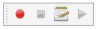
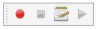

|
| Menu location |
|---|
| Macro → Macro Stop |
| Workbenches |
| All |
| Default shortcut |
| None |
| See also |
| ... |
Contents |
Description
This function stops recording a macro. It is accessible via Macro → Macro Stop, or by clicking the  Stop the macro recording session in the macros toolbar .
Stop the macro recording session in the macros toolbar .
{kind=link}
Utilization
When you start a  Recording the macro button
Recording the macro button  Stop the macro recording session in the macros toolbar turn green
Stop the macro recording session in the macros toolbar turn green  .
.
Click on  green square, to stop recording. The macro file is closed and automatically saved to disk in the expected location.
green square, to stop recording. The macro file is closed and automatically saved to disk in the expected location.
The macro can be called through Macro → Macros..., or with the  Execute this macro button in the macro toolbar to be executed or modified as you want
Execute this macro button in the macro toolbar to be executed or modified as you want